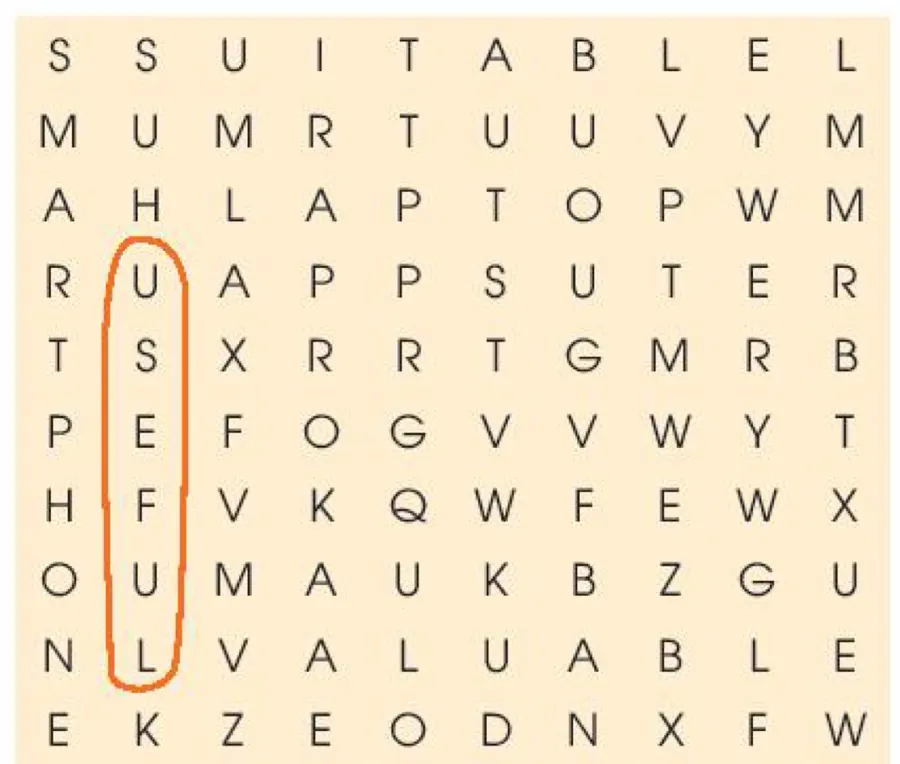

Inventions for education
Lesson 1 — Getting started
5Five stops in 45 minutes
- 🧧
Warm-up
Lucky Envelopes
6 min - 🔤
Words
Five new words
6 min - 🎧
Listen & read
Tasks 1–2
15 min - 🔎
Language
Tasks 3–4
12 min - 🏠
Wrap-up
Project preparation
6 min
By the end of this lesson…
- 🔤
Vocabulary
Use words about inventions for education.
- 📖
Read
Find specific information in a conversation.
- 🔎
Language
Notice the present perfect, gerunds and to-infinitives.
Lucky Envelopes
Warm-up · name the inventions
6 minutesNew words
Inventions for education
6 minutesListen and read
Tasks 1 and 2 · pages 52–53
15 minutesPhong and his dad · part 1
Phong: Dad, I’ve saved some money since Tet holiday. I think I’ll buy something new for my studies.
Dad: Good idea, Phong. What do you want to buy?
Phong: I’m not sure. It’s hard to choose between a smartphone and a laptop. They’re both useful and I’ve wanted either of them for a long time. What do you think, Dad?
Phong and his dad · part 2
Dad: Perhaps a laptop is a better choice. Since laptops were invented, they’ve allowed us to study better and work faster. They’ve completely changed our lives in the last 20 years.
Phong: That’s true, Dad. But smartphones have also improved the way we work and study.
Dad: Really? I didn’t know smartphones were suitable for learning.
Phong and his dad · part 3
Phong: Well, it’s actually a lot of fun to learn with educational apps. It’s also very convenient for learners to use them. Some of my classmates love using them on their smartphones. The apps allow them to communicate and learn at the same time.
Dad: I didn’t know that! There have been so many valuable inventions. Hmm… Perhaps you should ask your teacher. She may be able to help you decide.
Read the conversation again
1. What inventions are Phong and his dad talking about? Laptops / computers and smartphones.
2. How useful are laptops? Since they were invented, laptops have allowed us to study better and work faster.
3. Why is it fun and convenient to learn with educational apps on smartphones? Because the apps allow learners to communicate and learn at the same time.
Language in the conversation
Tasks 3 and 4 · page 53
12 minutesFind three nouns and three adjectives

1. useful (example)
2–6 smartphone · suitable · laptop · apps · valuable
Nouns: smartphone, laptop, apps
Adjectives: useful, suitable, valuable
One word from the conversation in each gap
Phong and his father are discussing what to buy for his studies. Phong has wanted a laptop or a smartphone (1) ______ a long time because they are both very useful. Laptops (2) ______ completely changed our lives since their invention, but smartphones have also (3) ______ the way we work and study. For example, it’s fun (4) ______ study with educational apps on smartphones. They allow students (5) ______ (6) ______ and communicate at the same time. It’s really difficult for Phong to choose between the two.
The summary
(1) wanted a laptop or a smartphone ______ a long time for
(2) Laptops ______ completely changed our lives have
(3) smartphones have also ______ the way we work improved
(4) it’s fun ______ study to
(5)–(6) They allow students ______ ______ and communicate to · learn
What have you learnt today?
Today’s board
Words: invention · improve · suitable · app · convenient · valuable
Language preview: I’ve saved money since Tet · They’ve changed our lives · it’s fun to learn · love using
Project (Lesson 8): in groups, think of a useful invention for the classroom — real or imaginary.
Homework: talk for one minute about an invention for education; prepare Lesson 2 — Language (page 53).